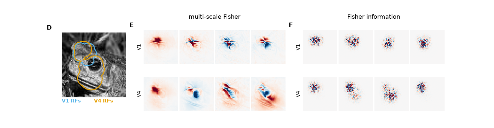
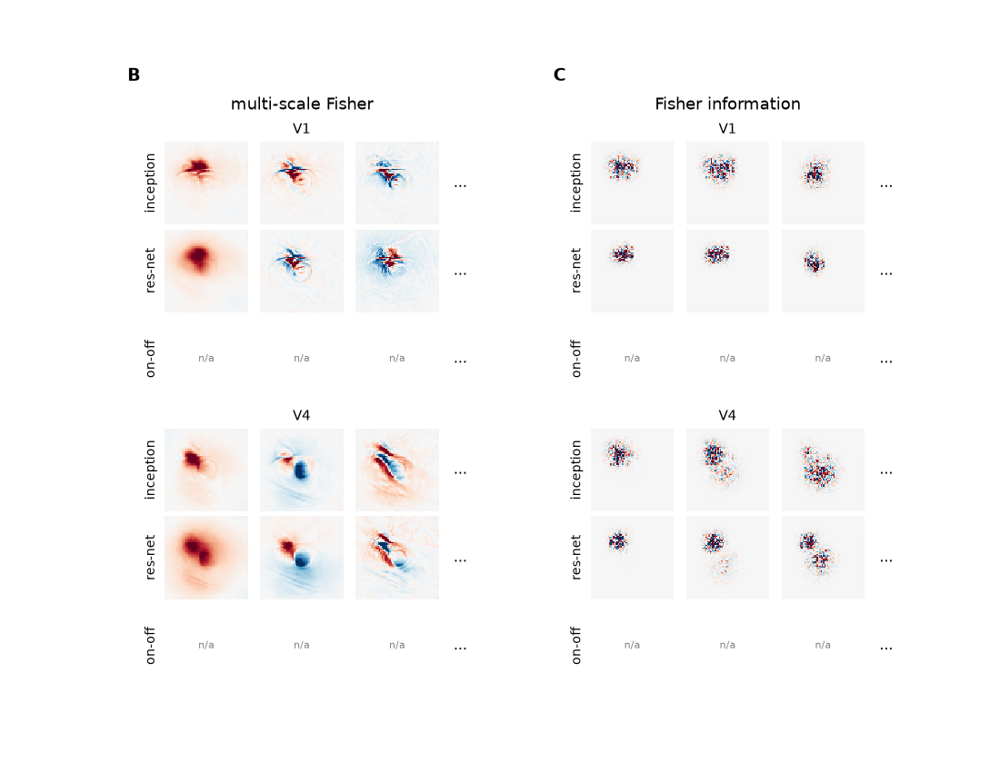
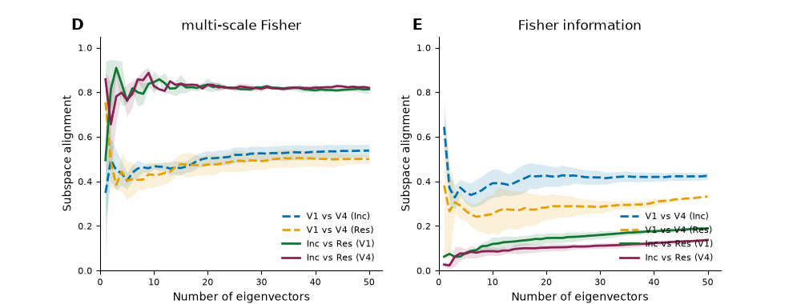
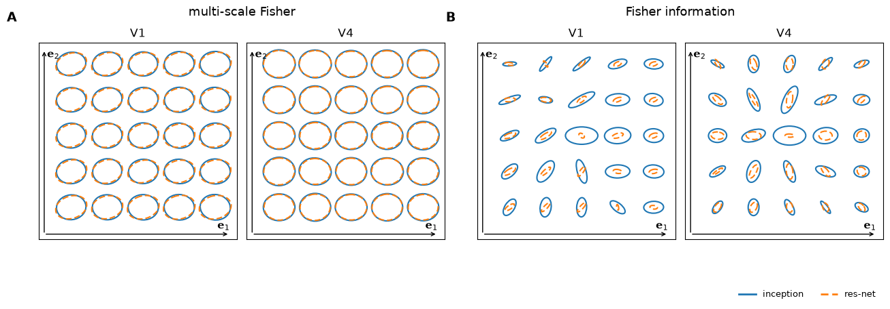
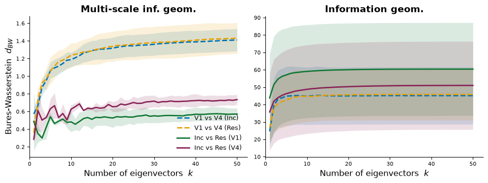

Understanding how neural population responses represent sensory information is a central problem in systems neuroscience. One approach is to define a representational geometry on stimulus space in which distances reflect how reliably stimuli can be distinguished from neural activity. However, different constructions of these distances can lead to qualitatively different conclusions about the neural code. Here, we show that a unique Riemannian representational geometry emerges from first principles governing how distances contract as stimulus resolution is lost through coarse-graining. This results in a multi-scale extension of the Fisher information metric, capturing encoding structure from fine stimulus details to coarse global distinctions. The resulting geometry is exactly related to the mutual information encoded by the population: well encoded stimulus directions, those contributing more to mutual information, are expanded, whereas poorly encoded directions are contracted. The metric tensor can be estimated using diffusion models, making the framework practical for large neural populations and high-dimensional stimuli. Applied to visual cortical responses to natural images, the eigenvectors of the metric tensor identify stimulus variations that contribute most to information transmission, yielding interpretable features that are robust to modelling choices. Together, these results provide a principled, information-theoretic framework for characterising neural population codes.
The Fisher information $J(x)$ measures how sensitive the neural response distribution is to a tiny change of the stimulus, but it is purely local. The multi-scale Fisher metric adds up the Fisher information of the stimulus blurred at every diffusion scale $t$:
Directions in which this metric is large are the stimulus variations that contribute most to the mutual information between stimulus and response. For natural images, $G(x)$ is estimated with a conditional diffusion model, and its leading eigenvectors show which image features a population encodes best.





The multigeom Python package computes these metrics for any fitted PyTorch model of neural responses.
pip install multigeomimport multigeom
multigeom.validate_encoder(encoder) # checks the encoder contract and names the rule it breaks
fisher = multigeom.compute_fisher(image=x, encoder=encoder, sigma=0.22, top_k=10)
fisher.eigenvalues, fisher.eigenvectors # leading eigenpairs of J(x)The tutorials run on your data, from the first check of an encoder to the figures of the paper.
Check your model against the encoder contract and compute its Fisher metric.
Eigenvectors of G(x) and J(x) for an example image (Fig. 3, 4B-C).
Compare models and areas over many images, on local or serverless GPUs (Fig. 4D-E).
Metric ellipses around a reference image (Fig. 5).
Distances between geometries (Fig. 6).
@inproceedings{azeglio2026multiscale,
title = {A multi-scale information geometry reveals the structure of mutual information in neural populations},
author = {Azeglio, Simone and Laquitaine, Steeve and Ferrari, Ulisse and Chalk, Matthew},
booktitle = {Advances in Neural Information Processing Systems},
year = {2026}
}